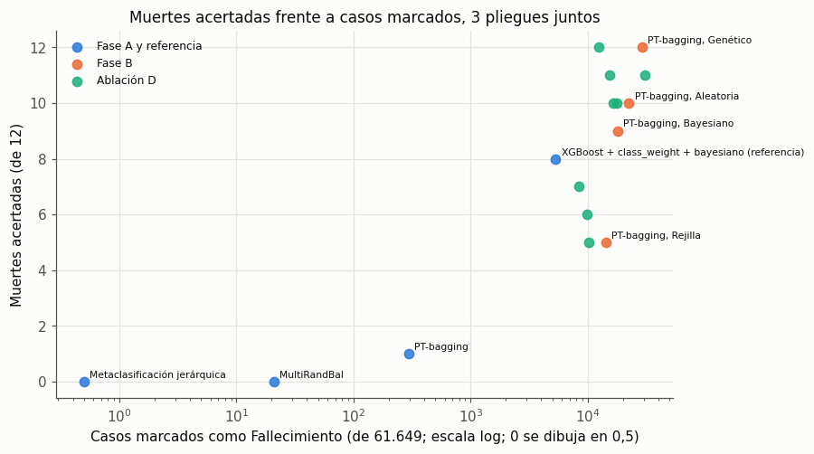

17. Primer candidato a modelo original: PT-bagging (histórico)#
Capítulo histórico: primer candidato a modelo original
Este capítulo documenta PT-bagging, el primer candidato a modelo original, que no superó a los benchmarks, y sus cuatro iteraciones de diseño. Se conserva como registro de los candidatos probados (guía §13; tabla de la sección 19.9). Los pendientes que listaba la versión preliminar del 2026-10-21 quedaron superados o descartados:
el árbol propio, la confirmación en la prueba y la corrida en el diseño del grupo ya no aplican, porque el modelo original final es SECR (capítulo 19) y la prueba de octubre a diciembre quedó bloqueada (capítulo 00, B1);
las tres pruebas de hipótesis con Holm y δ de Cliff están en el capítulo 20;
la declaración de uso de herramientas de IA está en el capítulo 14;
pytest tests/test_original_model.pyya se corrió en el entorno del repositorio (sección 17.4).
Cómo se lee este capítulo.
Todas las tablas se leen de
results/modelo_original/, que tiene resúmenes sin identificadores.El código que las produjo está en
disenio_temporal/(ver suLEEME.md).Esas corridas usaron scikit-learn 1.2.2, imbalanced-learn 0.11.0 y xgboost 2.1.4. El resto del repositorio usa 1.3.0, 0.12.4 y 2.1.3.
Observado es lo que se lee en una tabla; interpretación es la lectura que hacemos de ella.
Veredicto adelantado.
R1 (novedad de aplicación): sí, de forma provisional (capítulo 16).
R2 (implementación propia): quedó en riesgo (árbol de scikit-learn sin modificar); por eso se pasó a SECR (capítulo 19).
R3 (superioridad): no. PT-bagging no supera a los modelos del curso.
import sys, inspect, warnings
sys.path.insert(0, '../src')
warnings.filterwarnings('ignore')
import numpy as np, pandas as pd, matplotlib.pyplot as plt
from IPython.display import display, Markdown
from sklearn.metrics import balanced_accuracy_score
from osha_e3 import config as C, plots as P
from osha_e3.original_model import PTBagging
P.setup()
R = C.RESULTS / 'modelo_original'
NOMBRES = {'pt_bagging': 'PT-bagging', 'pt_bagging_sin_umbral': 'PT-bagging sin umbral (ablación A)',
'multirandbal': 'MultiRandBal', 'hierarchical': 'Metaclasificación jerárquica',
'hafl_xgboost': 'HAFL-XGBoost', 'hafl_xgboost_gamma0': 'HAFL-XGBoost con γ = 0 (ablación)',
'xgboost__class_weight__bayes': 'XGBoost + class_weight + bayesiano (referencia)',
'xgboost__class_weight__random': 'XGBoost + class_weight + aleatorio'}
OPT = {'grid': 'Rejilla', 'random': 'Aleatoria', 'bayes': 'Bayesiano', 'genetic': 'Genético'}
COLS = {'muertes_acertadas': 'Muertes acertadas', 'muertes': 'Muertes', 'casos_marcados': 'Casos marcados como Fall.',
'recall_2_4': 'Recall 2–4', 'auc_macro': 'AUC macro', 'balanced_accuracy': 'BA', 'kappa': 'Kappa',
'log_loss': 'Log-loss'}
17.1 Motivación#
El problema tiene un desbalance extremo: Fallecimiento es alrededor del 0,03 % de los casos (69 muertes en
269.516 casos de desarrollo), y las otras tres clases rondan un tercio cada una. Los capítulos 6 a 9 tratan el
desbalance antes o durante el entrenamiento, con SMOTE, ADASYN o class_weight. Esas técnicas cambian los datos o
la pérdida, y con eso cambian también las probabilidades que estima el modelo.
PT-bagging (Collell, Prelec y Patil, 2018) toma el camino contrario:
entrena con la distribución natural de las clases, para estimar bien
P(y = k | x);corrige el desbalance solo al decidir, con una regla cerrada que maximiza la balanced accuracy, que es la métrica del proyecto.
No es una red neuronal, y la regla de decisión no está en scikit-learn ni en imbalanced-learn.
17.2 Formulación#
Sea \(\mathcal{D} = \{(x_i, y_i)\}_{i=1}^{n}\) con \(y_i \in \{1, \dots, K\}\) y proporciones de clase \(\lambda_k = \frac{1}{n}\sum_i \mathbb{1}[y_i = k]\). El método tiene tres pasos.
1. Bolsas. Para \(b = 1, \dots, B\) se toma una muestra bootstrap \(\mathcal{D}_b\) de tamaño \(n\), con reemplazo y sin estratificar, y se entrena un árbol sin podar \(T_b\) con criterio de entropía. Cada hoja guarda la proporción de cada clase entre los casos que caen en ella.
2. Promedio.
3. Decisión con umbral igual al prior.
La implementación devuelve como predict_proba el puntaje normalizado
\(s_k(x) = \frac{\hat P(k \mid x)/\lambda_k}{\sum_j \hat P(j \mid x)/\lambda_j}\). Así, predict es igual a
argmax(predict_proba), como en el resto del pipeline. Las probabilidades sin reponderar están en
predict_proba_raw.
Teorema 1 (Collell et al., 2018). Sea \(h^*(x) = \arg\max_k P(y = k \mid x)/\lambda_k\), con las probabilidades verdaderas. Entonces \(h^*\) maximiza la macro-accuracy
que es la balanced accuracy de la población.
Demostración. Por la definición de probabilidad condicional, \(P(h(X) = k \mid Y = k) = \mathbb{E}\big[\mathbb{1}[h(X) = k]\,\mathbb{1}[Y = k]\big]/\lambda_k\). Condicionando en \(X\):
Para cada \(x\) fijo, el integrando depende solo de la etiqueta que se le asigna a \(x\). Por eso se maximiza punto a punto eligiendo la clase con mayor \(P(Y = k \mid x)/\lambda_k\), y maximizar en cada punto maximiza la esperanza. \(\blacksquare\)
Supuesto clave. El teorema usa las probabilidades verdaderas. Con \(\hat P\) estimado, la regla (2) es óptima solo si \(\hat P\) está bien calibrado. Con 16 a 37 muertes de entrenamiento por pliegue no lo está, y eso explica los resultados de 17.5 y 17.6.
17.3 Pseudocódigo y complejidad#
Entrada: X (n × d, one-hot disperso), y; B árboles; semilla s
λ_k ← proporción de la clase k en y
rng ← generador con semilla s
para b = 1..B:
I_b ← n índices al azar con reemplazo (rng)
T_b ← árbol(criterio = entropía, sin podar, semilla = rng) entrenado con (X[I_b], y[I_b])
predecir(x):
P ← (1/B) Σ_b P_{T_b}(· | x) # ecuación (pt-promedio)
devolver argmax_k P_k / λ_k # ecuación (pt-regla)
Los índices y las semillas de las B bolsas se sortean antes de entrenar. Por eso entrenar en hilos
(n_jobs) da exactamente el mismo modelo; la prueba (ii) de 17.4 lo verifica.
Complejidad (con \(n\) casos, \(d\) columnas one-hot, \(B\) árboles, \(K\) clases y \(h\) la profundidad del árbol):
Entrenamiento: \(O(B\, d\, n \log n)\) si los árboles están balanceados. Un árbol sin podar puede degenerar hasta \(O(B\, d\, n^2)\). La regla de decisión no cuesta nada al entrenar.
Predicción: \(O(B\,(h + K))\) por caso.
Memoria: \(O(B \cdot \text{hojas} \cdot K)\).
La tabla siguiente muestra los tiempos medidos. En la Fase A, con el árbol del paper, el tiempo crece algo más que linealmente con \(n\). En la Fase B, los árboles podados que eligen los optimizadores se reajustan mucho más rápido.
t = pd.read_csv(R / 'tiempos_pt_bagging.csv')
t['optimizador'] = t['optimizador'].replace(OPT)
t.rename(columns={'fase': 'Fase', 'optimizador': 'Optimizador', 'pliegue': 'Pliegue', 'filas_entrenamiento': 'Filas',
'columnas_onehot': 'Columnas one-hot', 'n_estimators': 'Árboles', 'min_samples_leaf': 'Mín. por hoja',
'segundos_ajuste': 'Ajuste (s)', 'segundos_total': 'Total (s)',
'segundos_por_evaluacion': 's por evaluación', 'segundos_prediccion': 'Predicción (s)'})
| Fase | Optimizador | Pliegue | Filas | Columnas one-hot | Árboles | Mín. por hoja | Ajuste (s) | Total (s) | s por evaluación | Predicción (s) | |
|---|---|---|---|---|---|---|---|---|---|---|---|
| 0 | A (paper: 100 árboles sin podar) | ninguno | 1 | 56063 | 1172 | 100 | 1 | 467.1 | 469.3 | NaN | NaN |
| 1 | A (paper: 100 árboles sin podar) | ninguno | 2 | 95908 | 1241 | 100 | 1 | 1043.8 | 1046.6 | NaN | NaN |
| 2 | A (paper: 100 árboles sin podar) | ninguno | 3 | 138669 | 1283 | 100 | 1 | 1819.3 | 1822.0 | NaN | NaN |
| 3 | B (reajuste con el mejor de la búsqueda) | Bayesiano | 1 | 56063 | 472 | 117 | 1 | 63.4 | 842.1 | 64.7 | 0.52 |
| 4 | B (reajuste con el mejor de la búsqueda) | Bayesiano | 2 | 95908 | 1241 | 101 | 21 | 347.8 | 1998.8 | 137.3 | 0.59 |
| 5 | B (reajuste con el mejor de la búsqueda) | Bayesiano | 3 | 138669 | 252 | 175 | 24 | 1198.9 | 3667.5 | 205.3 | 0.97 |
| 6 | B (reajuste con el mejor de la búsqueda) | Genético | 1 | 56063 | 778 | 147 | 4 | 45.5 | 852.5 | 67.1 | 0.59 |
| 7 | B (reajuste con el mejor de la búsqueda) | Genético | 2 | 95908 | 487 | 210 | 17 | 717.4 | 2324.2 | 133.6 | 0.77 |
| 8 | B (reajuste con el mejor de la búsqueda) | Genético | 3 | 138669 | 1283 | 209 | 15 | 481.8 | 3012.1 | 210.5 | 0.82 |
| 9 | B (reajuste con el mejor de la búsqueda) | Rejilla | 1 | 56063 | 1172 | 100 | 1 | 30.3 | 760.6 | 60.7 | 0.53 |
| 10 | B (reajuste con el mejor de la búsqueda) | Rejilla | 2 | 95908 | 1241 | 200 | 50 | 536.2 | 2002.0 | 121.8 | 1.08 |
| 11 | B (reajuste con el mejor de la búsqueda) | Rejilla | 3 | 138669 | 1283 | 200 | 10 | 2377.8 | 4793.4 | 200.9 | 1.41 |
| 12 | B (reajuste con el mejor de la búsqueda) | Aleatoria | 1 | 56063 | 472 | 138 | 9 | 49.3 | 929.9 | 73.2 | 0.56 |
| 13 | B (reajuste con el mejor de la búsqueda) | Aleatoria | 2 | 95908 | 792 | 295 | 37 | 763.0 | 2503.4 | 144.7 | 1.35 |
| 14 | B (reajuste con el mejor de la búsqueda) | Aleatoria | 3 | 138669 | 1283 | 256 | 14 | 1283.5 | 4018.2 | 227.5 | 1.26 |
Tabla 17.1. Tiempos de PT-bagging (pared, 1 hilo por proceso).
En la Fase A, el ajuste pasa de 467 s con 56.063 filas a 1.819 s con 138.669: con 2,5 veces más filas tarda 3,9 veces más.
Predecir unos 20.000 casos de validación tarda entre 0,5 y 1,4 s.
«s por evaluación» es el tiempo medio de una configuración en la búsqueda interna (muestra del 25 %).
17.4 Código y pruebas unitarias#
El estimador está en src/osha_e3/original_model.py. La clase base _TreeEnsemble entrena los árboles y promedia
sus probabilidades; PTBagging añade el bootstrap y la regla de decisión:
from osha_e3 import original_model as OM
print(inspect.getsource(OM._TreeEnsemble))
print(inspect.getsource(OM.PTBagging))
class _TreeEnsemble(BaseEstimator, ClassifierMixin):
"""Base común: entrena ``n_estimators`` árboles, cada uno sobre las filas que da ``_sample``,
y promedia sus probabilidades."""
def _tree(self, seed):
return DecisionTreeClassifier(criterion=self.criterion, max_depth=self.max_depth,
min_samples_leaf=self.min_samples_leaf, ccp_alpha=self.ccp_alpha,
max_features=self.max_features, random_state=seed)
def _fit_trees(self, X, y, samples, seeds):
# Las muestras y semillas ya están fijadas, así que entrenar en hilos (n_jobs) no cambia el resultado.
from joblib import Parallel, delayed
def fit_one(idx, seed):
return self._tree(int(seed)).fit(_rows(X, idx), y[idx])
self.estimators_ = Parallel(n_jobs=getattr(self, 'n_jobs', 1), prefer='threads')(
delayed(fit_one)(idx, seed) for idx, seed in zip(samples, seeds))
return self
def _mean_proba(self, X):
check_is_fitted(self, 'estimators_')
if sp.issparse(X):
X = X.tocsr()
proba = np.zeros((X.shape[0], len(self.classes_)))
for tree in self.estimators_:
cols = np.searchsorted(self.classes_, tree.classes_)
proba[:, cols] += tree.predict_proba(X)
return proba / len(self.estimators_)
def predict(self, X):
proba = self.predict_proba(X) # primero: lanza NotFittedError si el modelo no está ajustado
return self.classes_[proba.argmax(axis=1)]
class PTBagging(_TreeEnsemble):
"""Bagging con *threshold-moving* (PT-bagging, Neurocomputing 2018).
Cada árbol se entrena con una muestra bootstrap simple (conserva la distribución natural de
las clases). ``P(y=k|x)`` es el promedio de los árboles y la regla de decisión del paper es
``argmax_k P(y=k|x) / λ_k`` con ``λ_k`` = proporción de la clase k en el entrenamiento
(Teorema 1: maximiza la macro-accuracy, es decir, la balanced accuracy).
Para que ``predict`` = ``argmax(predict_proba)`` como en el resto del pipeline,
``predict_proba`` devuelve las probabilidades reponderadas y normalizadas
``(P_k / λ_k) / Σ_j (P_j / λ_j)`` (la posterior bajo un prior uniforme).
Las probabilidades sin reponderar están en ``predict_proba_raw``.
Parameters
----------
n_estimators : int, default=100
Número de árboles (el paper reporta resultados con 100).
threshold : {'prior', None}, default='prior'
None = ablación sin umbral (``argmax P``).
criterion, max_depth, min_samples_leaf, ccp_alpha, max_features :
Del árbol base. Por defecto, árbol sin podar con entropía (J48 sin podar ni Laplace).
random_state : int or None
"""
def __init__(self, n_estimators=100, threshold='prior', criterion='entropy', max_depth=None,
min_samples_leaf=1, ccp_alpha=0.0, max_features=None, random_state=None, n_jobs=1):
self.n_estimators = n_estimators
self.threshold = threshold
self.criterion = criterion
self.max_depth = max_depth
self.min_samples_leaf = min_samples_leaf
self.ccp_alpha = ccp_alpha
self.max_features = max_features
self.random_state = random_state
self.n_jobs = n_jobs
def fit(self, X, y):
y = np.asarray(y)
X = X.tocsr() if sp.issparse(X) else np.asarray(X)
rng = np.random.default_rng(self.random_state)
self.classes_ = np.unique(y)
self.prior_ = np.array([np.mean(y == c) for c in self.classes_])
n = len(y)
samples = [rng.integers(n, size=n) for _ in range(self.n_estimators)]
seeds = rng.integers(2**31 - 1, size=self.n_estimators)
return self._fit_trees(X, y, samples, seeds)
def predict_proba_raw(self, X):
return self._mean_proba(X)
def predict_proba(self, X):
proba = self._mean_proba(X)
if self.threshold is None:
return proba
score = proba / self.prior_
total = score.sum(axis=1, keepdims=True)
return np.divide(score, total, out=np.full_like(score, 1 / len(self.classes_)), where=total > 0)
Las pruebas están en tests/test_original_model.py. Las cuatro que pide la sección 5.4 de la guía son:
Prueba |
Qué verifica |
|---|---|
(i) |
Clasifica perfecto cuando la clase es función determinista de una variable. Con una clase rara, |
(ii) |
Misma semilla, mismas probabilidades; otra semilla, otras bolsas; |
(iii) |
|
(iv) |
|
El archivo tiene además pruebas de la regla P/λ, de las cuatro iteraciones de diseño, de que no haya fuga
(la predicción no depende de las etiquetas del conjunto que se predice) y de las derivadas de HAFL comparadas con
diferencias finitas.
Resultado: 29 pruebas pasan y 0 fallan. Se ejecutaron el 2026-10-21 en el entorno de disenio_temporal/ con un
ejecutor mínimo equivalente, porque pytest no está instalado en ese entorno. Actualización (2026-10-23):
pytest tests/test_original_model.py en el entorno del repositorio (scikit-learn 1.3.0, imbalanced-learn 0.12.4 y
xgboost 2.1.3) da 29 de 29 aprobadas. Antes fallaba la prueba (iii): desde scikit-learn 1.3 el árbol acepta NaN y
PTBagging.fit ya no los rechazaba; ahora valida la entrada con check_array(..., force_all_finite=True). La suite
completa (pytest tests/) da 44 de 44.
Ilustración del Teorema 1 con datos sintéticos. La celda siguiente usa datos con una clase rara (~1 %) y compara la balanced accuracy con y sin umbral, en una partición aparte de prueba:
rng = np.random.default_rng(C.SEED)
n = 6000
y = rng.choice([1, 2, 3, 4], size=n, p=[0.01, 0.33, 0.33, 0.33])
Xs = rng.integers(0, 6, size=(n, 6))
Xs[:, 0] = np.where((y == 1) & (rng.random(n) < 0.7), 0, Xs[:, 0]) # la clase rara prefiere la categoría 0
Xs[:, 1] = (Xs[:, 1] + y) % 6 # señal débil para las demás clases
X = np.hstack([np.eye(6)[Xs[:, j]] for j in range(6)])
tr, te = np.arange(n) < 4000, np.arange(n) >= 4000
demo = []
for thr, nombre in [('prior', 'argmax P/λ (PT-bagging)'), (None, 'argmax P (sin umbral)')]:
m = PTBagging(n_estimators=50, min_samples_leaf=20, threshold=thr, random_state=C.SEED).fit(X[tr], y[tr])
pred = m.predict(X[te])
demo.append({'Regla': nombre, 'BA en prueba sintética': balanced_accuracy_score(y[te], pred),
'Recall de la clase rara': np.mean(pred[y[te] == 1] == 1), 'Casos rara en prueba': int((y[te] == 1).sum())})
pd.DataFrame(demo).set_index('Regla').round(3)
| BA en prueba sintética | Recall de la clase rara | Casos rara en prueba | |
|---|---|---|---|
| Regla | |||
| argmax P/λ (PT-bagging) | 0.330 | 0.524 | 21 |
| argmax P (sin umbral) | 0.255 | 0.000 | 21 |
Tabla 17.2. Ilustración sintética. Aquí las hojas tienen al menos 20 casos, así que \(\hat P\) de la clase rara no es cero, y el umbral cambia las decisiones como predice el teorema. En los datos de OSHA, la Fase A usa árboles sin podar: casi todas las hojas tienen \(\hat P(\text{Fall.}) = 0\) y el umbral no tiene sobre qué actuar (17.5).
17.5 Fase A: cribado con los hiperparámetros del paper#
Diseño.
Diseño temporal de 3 pliegues externos (capítulo 12.6): 61.649 casos de validación y 12 muertes en total.
Hiperparámetros del paper: 100 árboles sin podar, sin optimizador.
Tres candidatos de la literatura (capítulo 16): PT-bagging, MultiRandBal y metaclasificación jerárquica.
Referencias: las 8 combinaciones de XGBoost y Random Forest con
class_weight.La regla de decisión se escribió antes de ver los números (
regla_decision.md): un candidato pasa si acierta más muertes con las mismas falsas alarmas que la referencia, o las mismas muertes marcando menos casos.
cr = pd.read_csv(R / 'cribado.csv')
sel = ['pt_bagging', 'pt_bagging_sin_umbral', 'multirandbal', 'hierarchical',
'xgboost__class_weight__bayes', 'xgboost__class_weight__random']
fa = cr[(cr.pliegue == 'todos') & cr.modelo.isin(sel)].set_index('modelo').loc[sel]
fa.index = fa.index.map(NOMBRES)
fa[list(COLS)].rename(columns=COLS).round(3)
| Muertes acertadas | Muertes | Casos marcados como Fall. | Recall 2–4 | AUC macro | BA | Kappa | Log-loss | |
|---|---|---|---|---|---|---|---|---|
| modelo | ||||||||
| PT-bagging | 1 | 12 | 296 | 0.487 | 0.644 | 0.386 | 0.231 | 1.635 |
| PT-bagging sin umbral (ablación A) | 0 | 12 | 1 | 0.485 | 0.644 | 0.364 | 0.229 | 1.619 |
| MultiRandBal | 0 | 12 | 21 | 0.482 | 0.631 | 0.361 | 0.222 | 1.252 |
| Metaclasificación jerárquica | 0 | 12 | 0 | 0.495 | 0.684 | 0.371 | 0.243 | 1.214 |
| XGBoost + class_weight + bayesiano (referencia) | 8 | 12 | 5337 | 0.466 | 0.704 | 0.516 | 0.228 | 1.107 |
| XGBoost + class_weight + aleatorio | 0 | 12 | 57 | 0.527 | 0.745 | 0.395 | 0.287 | 0.964 |
Tabla 17.3. Fase A, los 3 pliegues juntos.
Observado:
Ningún candidato cumple la regla (
decision_fase_a.md).PT-bagging acierta 1 de 12 muertes y marca 296 casos. La referencia acierta 8 de 12 y marca 5.337.
Los tres candidatos tienen AUC macro y log-loss peores que la referencia.
Por la regla de respaldo pasa a la Fase B el que más muertes acierta con menos casos marcados: PT-bagging.
Interpretación:
Los árboles sin podar dan probabilidades casi 0/1. Según
proba_rawde las predicciones guardadas, el 99,2 %, el 99,7 % y el 99,6 % de los casos de validación reciben \(\hat P(\text{Fall.}) = 0\) exacto en los pliegues 1, 2 y 3. Cero dividido por \(\lambda\) sigue siendo cero.Solo 1 de las 12 muertes tiene \(\hat P > 0\), y es la única que se acierta.
La metaclasificación jerárquica nunca marca Fallecimiento: su Naive Bayes de segundo nivel aprende el prior real.
17.6 Fase B: validación anidada y ablaciones#
Diseño.
Mismo bucle anidado que la corrida del capítulo 12.6: búsqueda en el 25 % del entrenamiento, 3 pliegues internos agrupados por establecimiento y reajuste al 100 %.
4 optimizadores × 3 pliegues, sin balanceo adicional: el método ya rebalancea al decidir, y añadir SMOTE o pesos lo haría dos veces.
12 evaluaciones por optimizador, menos que las 20 de la corrida base. Fue un recorte declarado por la proyección de tiempo (
proyeccion_fase_b.md). La proyección sobrestimó el tiempo unas 3,5 veces: con 20 evaluaciones habría cabido. Antes de comparar con la referencia hay que igualar el presupuesto (pendiente).El punto del paper (100 árboles sin podar) está dentro de la rejilla.
fb = pd.read_csv(R / 'fase_b_resumen.csv')
por_pliegue = fb[fb.pliegue != 'todos'].groupby('optimizador').balanced_accuracy.mean()
tb = fb[fb.pliegue == 'todos'].set_index('optimizador').loc[list(OPT)]
tb['BA media por pliegue'] = por_pliegue
ref = cr[cr.modelo == 'xgboost__class_weight__bayes']
fila_ref = ref[ref.pliegue == 'todos'].iloc[0].copy()
fila_ref['BA media por pliegue'] = ref[ref.pliegue != 'todos'].balanced_accuracy.mean()
tb.loc['Referencia: XGBoost + cw + bayesiano'] = fila_ref
tb.index = [OPT.get(i, i) for i in tb.index]
cols = list(COLS) + ['BA media por pliegue']
tb[cols].astype(float).rename(columns=COLS).round(3)
| Muertes acertadas | Muertes | Casos marcados como Fall. | Recall 2–4 | AUC macro | BA | Kappa | Log-loss | BA media por pliegue | |
|---|---|---|---|---|---|---|---|---|---|
| Rejilla | 5.0 | 12.0 | 14284.0 | 0.415 | 0.660 | 0.416 | 0.214 | 1.148 | 0.453 |
| Aleatoria | 10.0 | 12.0 | 22518.0 | 0.360 | 0.707 | 0.479 | 0.189 | 1.197 | 0.499 |
| Bayesiano | 9.0 | 12.0 | 18143.0 | 0.391 | 0.715 | 0.480 | 0.203 | 1.178 | 0.511 |
| Genético | 12.0 | 12.0 | 29384.0 | 0.307 | 0.690 | 0.480 | 0.161 | 1.230 | 0.480 |
| Referencia: XGBoost + cw + bayesiano | 8.0 | 12.0 | 5337.0 | 0.466 | 0.704 | 0.516 | 0.228 | 1.107 | 0.505 |
Tabla 17.4. Fase B, los 3 pliegues juntos, y BA media por pliegue.
Observado:
Los optimizadores eligen árboles podados (tabla 17.5).
Aciertan de 5 a 12 muertes, pero marcan de 14.284 a 29.384 casos, entre el 23 % y el 48 % de todos.
El recall 2–4 y el kappa quedan por debajo de la referencia.
La BA media por pliegue del bayesiano (0,511) es mayor que la de la referencia (0,505). Con los pliegues juntos es menor (0,480 frente a 0,516).
Interpretación:
La diferencia en la BA media por pliegue viene de la única muerte del pliegue 1. Ahí acertar o fallar un solo caso mueve el recall de Fallecimiento entre 0 y 1, y la BA del pliegue en 0,25. No se interpreta como superioridad.
hp = pd.read_csv(R / 'fase_b_hiperparametros.csv')
hp['optimizador'] = hp['optimizador'].replace(OPT)
hp.drop(columns=['max_features', 'min_frequency', 'threshold']).rename(columns={'optimizador': 'Optimizador', 'pliegue': 'Pliegue'})
| Optimizador | Pliegue | n_estimators | max_depth | min_samples_leaf | ccp_alpha | |
|---|---|---|---|---|---|---|
| 0 | Rejilla | 1 | 100 | 10.0 | 1 | 0.000000 |
| 1 | Rejilla | 2 | 200 | NaN | 50 | 0.000000 |
| 2 | Rejilla | 3 | 200 | NaN | 10 | 0.000000 |
| 3 | Aleatoria | 1 | 138 | 12.0 | 9 | 0.000005 |
| 4 | Aleatoria | 2 | 295 | 47.0 | 37 | 0.000002 |
| 5 | Aleatoria | 3 | 256 | 30.0 | 14 | 0.000003 |
| 6 | Bayesiano | 1 | 117 | 15.0 | 1 | 0.000009 |
| 7 | Bayesiano | 2 | 101 | 50.0 | 21 | 0.000154 |
| 8 | Bayesiano | 3 | 175 | 58.0 | 24 | 0.000063 |
| 9 | Genético | 1 | 147 | 11.0 | 4 | 0.000081 |
| 10 | Genético | 2 | 210 | 51.0 | 17 | 0.000385 |
| 11 | Genético | 3 | 209 | 17.0 | 15 | 0.000268 |
Tabla 17.5. Hiperparámetros elegidos en cada pliegue.
En el pliegue 1, la rejilla y el bayesiano eligen
min_samples_leaf= 1. Las demás celdas eligen hojas de 4 a 50 casos.Con hojas más grandes, \(\hat P(\text{Fall.})\) deja de ser cero en muchos casos. Dividido por un prior de cerca de 1/3.700, gana en demasiados: esa es la causa de los miles de casos marcados en la tabla 17.4.
Ablaciones.
A, sin umbral:
argmax Pcon los árboles de la Fase A. Acierta 0 de 12 muertes y marca 1 caso (tabla 17.3). El umbral es lo único que hace marcar Fallecimiento.D, el umbral sin el bagging: la misma regla
P/λ, aplicada sin reajustar a las predicciones guardadas de Random Forest y XGBoost sin balanceo.
ab = pd.read_csv(R / 'ablacion_d_umbral_prior.csv')
ab['regla'] = ab['regla'].replace({'argmax_P': 'argmax P', 'P_entre_prior': 'argmax P/λ'})
ab.set_index(['modelo', 'regla'])[list(COLS)].rename(columns=COLS).round(3)
| Muertes acertadas | Muertes | Casos marcados como Fall. | Recall 2–4 | AUC macro | BA | Kappa | Log-loss | ||
|---|---|---|---|---|---|---|---|---|---|
| modelo | regla | ||||||||
| random_forest__none__grid | argmax P | 0 | 12 | 0 | 0.501 | 0.743 | 0.376 | 0.254 | 0.976 |
| argmax P/λ | 10 | 12 | 17878 | 0.394 | 0.728 | 0.504 | 0.206 | 1.226 | |
| random_forest__none__random | argmax P | 0 | 12 | 0 | 0.518 | 0.758 | 0.388 | 0.276 | 0.961 |
| argmax P/λ | 11 | 12 | 15318 | 0.418 | 0.744 | 0.543 | 0.223 | 1.165 | |
| random_forest__none__bayes | argmax P | 0 | 12 | 0 | 0.516 | 0.754 | 0.387 | 0.274 | 0.959 |
| argmax P/λ | 10 | 12 | 16662 | 0.407 | 0.733 | 0.513 | 0.215 | 1.194 | |
| random_forest__none__genetic | argmax P | 0 | 12 | 0 | 0.519 | 0.763 | 0.390 | 0.279 | 0.957 |
| argmax P/λ | 12 | 12 | 12435 | 0.439 | 0.746 | 0.579 | 0.234 | 1.147 | |
| xgboost__none__grid | argmax P | 0 | 12 | 0 | 0.518 | 0.721 | 0.389 | 0.278 | 0.959 |
| argmax P/λ | 7 | 12 | 8393 | 0.464 | 0.709 | 0.494 | 0.245 | 1.158 | |
| xgboost__none__random | argmax P | 0 | 12 | 0 | 0.522 | 0.703 | 0.391 | 0.283 | 0.953 |
| argmax P/λ | 5 | 12 | 10271 | 0.458 | 0.699 | 0.448 | 0.247 | 1.253 | |
| xgboost__none__bayes | argmax P | 0 | 12 | 0 | 0.521 | 0.720 | 0.390 | 0.281 | 0.954 |
| argmax P/λ | 11 | 12 | 30830 | 0.284 | 0.678 | 0.442 | 0.140 | 1.625 | |
| xgboost__none__genetic | argmax P | 0 | 12 | 0 | 0.525 | 0.717 | 0.394 | 0.287 | 0.953 |
| argmax P/λ | 6 | 12 | 9902 | 0.460 | 0.712 | 0.470 | 0.248 | 1.228 |
Tabla 17.6. Ablación D.
Observado: Random Forest + genético + P/λ acierta 12 de 12 muertes marcando 12.435 casos. PT-bagging con el
genético acierta las mismas 12 marcando 29.384. Además, Random Forest tiene mejor recall 2–4 y mejor AUC.
Interpretación: el ingrediente que funciona es el umbral, no el bagging de árboles sin podar. Un Random Forest común da probabilidades más útiles para ese umbral. La ablación estaba prevista en la especificación y no se usa para elegir un modelo nuevo.
pts = [(NOMBRES[m], fa.loc[NOMBRES[m], 'casos_marcados'], fa.loc[NOMBRES[m], 'muertes_acertadas'], 'Fase A y referencia')
for m in ['pt_bagging', 'multirandbal', 'hierarchical', 'xgboost__class_weight__bayes']]
pts += [(f'PT-bagging, {OPT[o]}', r.casos_marcados, r.muertes_acertadas, 'Fase B')
for o, r in fb[fb.pliegue == 'todos'].set_index('optimizador').iterrows()]
pts += [(m.replace('__none__', ' sin balanceo, ').replace('_', ' '), r.casos_marcados, r.muertes_acertadas, 'Ablación D')
for m, r in ab[ab.regla == 'argmax P/λ'].set_index('modelo').iterrows()]
d = pd.DataFrame(pts, columns=['modelo', 'marcados', 'acertadas', 'grupo'])
fig, ax = plt.subplots(figsize=(8, 4.8))
for (g, sub), col in zip(d.groupby('grupo', sort=False), P.SERIES):
ax.scatter(sub.marcados.clip(lower=0.5), sub.acertadas, label=g, color=col, s=45, alpha=.85)
for _, r in d[d.grupo != 'Ablación D'].iterrows():
ax.annotate(r.modelo, (max(r.marcados, 0.5), r.acertadas), fontsize=7, xytext=(4, 3), textcoords='offset points')
ax.set_xscale('log')
ax.set_xlabel('Casos marcados como Fallecimiento (de 61.649; escala log; 0 se dibuja en 0,5)')
ax.set_ylabel('Muertes acertadas (de 12)')
ax.set_title('Muertes acertadas frente a casos marcados, 3 pliegues juntos')
ax.legend(frameon=False, fontsize=8)
P.save(fig, 'e3_original_muertes_vs_marcados')
plt.show()

Figura 17.1. Cada punto es un modelo, con los 3 pliegues de validación juntos.
Observado: ninguna variante de PT-bagging queda por encima y a la izquierda de la referencia, es decir, con más muertes acertadas marcando menos casos. Las variantes de la Fase B y de la ablación D aciertan más muertes solo porque marcan muchos más casos.
Interpretación: con 12 muertes de validación no hay un punto intermedio estable. El modelo o no marca casi nada (árboles sin podar) o marca decenas de miles de casos (árboles podados).
17.7 Iteraciones del diseño: Rondas 2 a 4#
Como PT-bagging no mejoró, se probaron cuatro variantes más, siguiendo la Figura 2 de la guía (iterar el diseño).
Cada una tuvo su regla escrita antes de calcular (regla_r2.md, regla_r3.md y regla_r4.md). Ninguna se
presenta como modelo original.
Ronda |
Iteración |
Fuente |
Resultado |
|---|---|---|---|
1 |
MultiRandBal; metaclasificación jerárquica |
Rodríguez et al. (KBS, 2020); Bhattacharya et al. (BMC MIDM, 2018) |
Fase A: 0 de 12 muertes; no pasan |
2 |
HAFL-XGBoost (pérdida focal con γ adaptativo como objetivo propio de XGBoost) |
Jiang et al. (Neural Comput. & Applic., 2023) |
Con los mismos casos marcados que la referencia: 8 de 12 frente a 8 de 12; no pasa |
3 |
Subproblema de las clases 2–4 (exploratorio) |
— |
Los cuatro candidatos quedan por debajo de la mejor base |
4 |
Frank–Hall ordinal con XGBoost (exploratorio y posterior) |
Frank y Hall (ECML, 2001) |
BA 2–4: −0,0025 (IC 95 %: −0,0055 a +0,0004); no pasa |
r2 = pd.read_csv(R / 'cribado_r2.csv')
r2 = r2[r2.pliegue == 'todos'].copy()
r2['modelo'] = r2['modelo'].map(NOMBRES)
r2['decision'] = r2['decision'].replace({'argmax': 'argmax propio', 'k_igual_ref': 'mismos casos marcados que la referencia'})
r2.set_index(['modelo', 'decision'])[['muertes_acertadas', 'casos_marcados', 'aucpr_fall', 'recall_2_4', 'auc_macro',
'balanced_accuracy']].rename(columns=COLS | {'aucpr_fall': 'AUC-PR Fall.'}).round(4)
| Muertes acertadas | Casos marcados como Fall. | AUC-PR Fall. | Recall 2–4 | AUC macro | BA | ||
|---|---|---|---|---|---|---|---|
| modelo | decision | ||||||
| XGBoost + class_weight + bayesiano (referencia) | argmax propio | 8 | 5337 | 0.0018 | 0.4657 | 0.7036 | 0.5160 |
| mismos casos marcados que la referencia | 8 | 5337 | 0.0018 | 0.4648 | 0.7036 | 0.5153 | |
| HAFL-XGBoost | argmax propio | 8 | 4321 | 0.0019 | 0.4741 | 0.7030 | 0.5223 |
| mismos casos marcados que la referencia | 8 | 5337 | 0.0019 | 0.4659 | 0.7030 | 0.5161 | |
| HAFL-XGBoost con γ = 0 (ablación) | argmax propio | 8 | 4242 | 0.0020 | 0.4752 | 0.7033 | 0.5231 |
| mismos casos marcados que la referencia | 8 | 5337 | 0.0020 | 0.4664 | 0.7033 | 0.5165 |
Tabla 17.7. Ronda 2: HAFL-XGBoost.
Las derivadas de la pérdida focal (gradiente y hessiano diagonal) se programaron a mano. Se comprobaron con diferencias finitas para γ entre 0 y 5.
Con los mismos casos marcados que la referencia, acierta las mismas 8 muertes. No pasa la regla.
Con su propio
argmax, marca menos casos. La ablación con γ = 0 da lo mismo, así que esa diferencia viene del objetivo propio (hessiano exacto), no de la pérdida focal.
c24 = pd.read_csv(R / 'comparaciones_2_4.csv')
c24['modelo'] = c24['modelo'].map(NOMBRES)
c24.set_index('modelo')[['delta_ba_2_4', 'delta_low_holm', 'delta_high_holm', 'p_mcnemar_holm', 'mejora']].rename(
columns={'delta_ba_2_4': 'Δ BA 2–4 frente a la mejor base', 'delta_low_holm': 'IC inferior (Holm)',
'delta_high_holm': 'IC superior (Holm)', 'p_mcnemar_holm': 'p McNemar (Holm)', 'mejora': '¿Mejora?'}).round(4)
| Δ BA 2–4 frente a la mejor base | IC inferior (Holm) | IC superior (Holm) | p McNemar (Holm) | ¿Mejora? | |
|---|---|---|---|---|---|
| modelo | |||||
| PT-bagging | -0.0382 | -0.0502 | -0.0284 | 0.0 | False |
| MultiRandBal | -0.0458 | -0.0573 | -0.0361 | 0.0 | False |
| Metaclasificación jerárquica | -0.0327 | -0.0422 | -0.0241 | 0.0 | False |
| HAFL-XGBoost | -0.0250 | -0.0335 | -0.0180 | 0.0 | False |
| HAFL-XGBoost con γ = 0 (ablación) | -0.0245 | NaN | NaN | NaN | NaN |
Tabla 17.8. Ronda 3: clases 2–4.
Diseño: 61.637 casos y 15.897 establecimientos, solo con predicciones guardadas. Se compara con la mejor de las 108 combinaciones base (XGBoost +
class_weight+ aleatorio, BA 2–4 = 0,527).Los intervalos son de un bootstrap pareado por establecimiento (2.000 réplicas), con nivel ajustado por Holm.
Los cuatro candidatos quedan por debajo, con intervalos que excluyen el cero.
Esta ronda encontró estructura ordinal en los errores: el 71,6 % de los errores de la base son entre clases adyacentes. Eso motivó la Ronda 4.
r4 = pd.read_csv(R / 'tabla_r4.csv').set_index('modelo')
r4.index = r4.index.map({'base': 'Mejor base (XGBoost + cw + aleatorio)', 'frank_hall': 'Frank–Hall ordinal',
'control': 'Control: el mismo pipeline multiclase reajustado'})
r4[['ba_2_4', 'ba_2_4_low', 'ba_2_4_high', 'kappa_cuadratico_2_4', 'frac_no_adyacente_2_4',
'4clases_muertes_acertadas', '4clases_casos_marcados']].rename(columns={
'ba_2_4': 'BA 2–4', 'ba_2_4_low': 'IC inf.', 'ba_2_4_high': 'IC sup.', 'kappa_cuadratico_2_4': 'Kappa cuadrático',
'frac_no_adyacente_2_4': 'Errores no adyacentes', '4clases_muertes_acertadas': 'Muertes acertadas',
'4clases_casos_marcados': 'Casos marcados'}).round(4)
| BA 2–4 | IC inf. | IC sup. | Kappa cuadrático | Errores no adyacentes | Muertes acertadas | Casos marcados | |
|---|---|---|---|---|---|---|---|
| modelo | |||||||
| Mejor base (XGBoost + cw + aleatorio) | 0.5274 | 0.5188 | 0.5365 | 0.2962 | 0.3664 | 0 | 57 |
| Frank–Hall ordinal | 0.5249 | 0.5162 | 0.5336 | 0.2916 | 0.3500 | 0 | 37 |
| Control: el mismo pipeline multiclase reajustado | 0.5274 | 0.5188 | 0.5365 | 0.2962 | 0.3664 | 0 | 57 |
Tabla 17.9. Ronda 4: Frank–Hall ordinal.
La fila «Control» reajusta el mismo pipeline multiclase de la base y reproduce sus predicciones guardadas (diferencia máxima 0): solo cambia la descomposición ordinal.
Usa el orden de gravedad de OSHA (Otro < Traslado < Días de ausencia < Fallecimiento) con 3 XGBoost binarios.
Reduce un poco los errores no adyacentes, pero predice aún más la clase del medio.
Δ BA 2–4 = −0,0025, con IC pareado de −0,0055 a +0,0004. No pasa (
decision_r4.md).Limitación: los hiperparámetros se tomaron de la base multiclase y no se optimizaron para la versión ordinal.
Cinco candidatos probados; ninguno mejoró. Elegir el mejor de varios intentos sobrestima su ventaja (efecto de selección). Aquí no hay ventaja que corregir.
17.8 Por qué no se encuentra mejora: techo de información, fuga y efecto del empleador#
Techo de las 8 variables (sensibilidad_variables.md). Es exploratorio: una sola partición y sin intervalos.
Con las 8 variables del diseño, un gradient boosting llega a una BA 2–4 de 0,533, el mismo techo (~0,53) que toda la corrida base.
Añadir naturaleza, parte del cuerpo, evento y fuente la sube a ~0,60. Pero esas variables salen de las narrativas y se excluyen por posible fuga.
Fuga directa. Proporción de casos de cada clase con el campo presente o mayor que cero:
J = R / 'justificacion'
display(pd.read_csv(J / 'fuga_directa.csv', index_col=0).rename(columns={'dafw>0': 'días de ausencia > 0',
'djtr>0': 'días de traslado > 0', 'date_of_death': 'fecha de muerte presente'}).round(3))
display(pd.read_csv(J / 'fuga_narrativas.csv', index_col=0).round(4))
display(pd.read_csv(J / 'informacion_mutua.csv', index_col=0).round(3))
| días de ausencia > 0 | días de traslado > 0 | fecha de muerte presente | |
|---|---|---|---|
| Fallecimiento | 0.145 | 0.000 | 1.0 |
| Días de ausencia | 0.994 | 0.293 | 0.0 |
| Traslado/restricción | 0.004 | 0.995 | 0.0 |
| Otro | 0.002 | 0.003 | 0.0 |
| muerte | dias_de_ausencia | restriccion_o_traslado | regreso_al_trabajo | cualquiera | |
|---|---|---|---|---|---|
| Fallecimiento | 0.5362 | 0.0000 | 0.0000 | 0.0000 | 0.5362 |
| Días de ausencia | 0.0006 | 0.0037 | 0.0027 | 0.0017 | 0.0082 |
| Traslado/restricción | 0.0005 | 0.0010 | 0.0043 | 0.0015 | 0.0069 |
| Otro | 0.0005 | 0.0015 | 0.0016 | 0.0017 | 0.0050 |
| informacion_mutua_nats | |
|---|---|
| nature_title_pred | 0.132 |
| source_title_pred | 0.124 |
| event_title_pred | 0.113 |
| naics_code | 0.087 |
| naics_3 | 0.069 |
| soc_code | 0.064 |
| part_title_pred | 0.056 |
| type_of_incident | 0.035 |
| time_started_work | 0.024 |
| state | 0.023 |
| time_of_incident | 0.013 |
| establishment_type | 0.005 |
| time_unknown | 0.003 |
Tablas 17.10 a 17.12. Fuga directa, menciones en las narrativas e información mutua con el desenlace (en nats). Todo se calculó solo con el desarrollo.
Observado:
dafw_num_away > 0en el 99,4 % de la clase 2,djtr_num_tr > 0en el 99,5 % de la clase 3 ydate_of_deathen el 100 % de las muertes. Estos campos definen la etiqueta.Las narrativas nombran la muerte en el 54 % de los fallecimientos. En las clases 2–4, menos del 1 % menciona ausencia, restricción o regreso al trabajo (búsqueda aproximada de palabras clave).
Las variables
*_predson las que más información comparten con el desenlace (0,11 a 0,13 nats, frente a 0,07 de la industria a 3 dígitos).
Lo que dice la documentación de OSHA:
Las
*_predlas asigna OSHA con el autocodificador SOII de BLS, a partir de las narrativas (ITA Case Detail Data Dictionary).Los casos de un año se cargan entre el 2 de enero y el 2 de marzo del año siguiente (ITA Data Users Guide). En el desarrollo, la mediana de
created_timestampes 283 días después del incidente.
Interpretación: las narrativas y las *_pred se escriben cuando el desenlace ya se conoce. Por eso no están
disponibles «a tiempo» para predecirlo.
display(pd.read_csv(J / 'empleador_resumen.csv').rename(columns={'establecimientos': 'Establecimientos (≥ 20 casos 2–3)',
'casos': 'Casos', 'var_z': 'var(z) observada', 'frac_abs_z_mayor_3': 'Fracción con |z| > 3'}).round(3))
pd.read_csv(J / 'empleador_agregado.csv').set_index('cuantil').round(3)
| Establecimientos (≥ 20 casos 2–3) | Casos | var(z) observada | Fracción con |z| > 3 | |
|---|---|---|---|---|
| 0 | 1416 | 72094 | 12.927 | 0.41 |
| z | prop_traslado | casos_por_establecimiento | |
|---|---|---|---|
| cuantil | |||
| 0.00 | -21.550 | 0.000 | 20.00 |
| 0.05 | -5.312 | 0.000 | 20.00 |
| 0.10 | -4.268 | 0.028 | 21.00 |
| 0.25 | -2.235 | 0.161 | 24.00 |
| 0.50 | 0.373 | 0.470 | 32.00 |
| 0.75 | 2.683 | 0.720 | 49.00 |
| 0.90 | 4.573 | 0.872 | 87.00 |
| 0.95 | 5.621 | 0.933 | 131.75 |
| 1.00 | 13.093 | 1.000 | 2013.00 |
Tablas 17.13 y 17.14. Efecto del empleador (casos de las clases 2 y 3).
Cómo se mide:
Para cada establecimiento se calcula un z que compara su proporción de traslado o restricción con la esperada según industria, naturaleza y parte del cuerpo.
Sin efecto del empleador, var(z) ≈ 1. Al permutar dentro de cada estrato da 0,98.
Observado:
var(z) = 12,9.
El 41 % de los establecimientos tiene |z| > 3; sin efecto del empleador se esperaría un 0,3 %.
Los cuantiles muestran establecimientos con 0 % y con 100 % de traslado.
Interpretación:
Que un caso termine en días de ausencia o en trabajo restringido depende en buena parte de la política de trabajo liviano de cada empleador.
La validación agrupa por establecimiento, así que el modelo nunca conoce la política del empleador de un caso nuevo.
Esto pone un techo a cualquier método, original o del curso, con estas 8 variables.
17.9 Veredicto (histórico)#
Superado. Este veredicto es el del primer candidato. El veredicto del modelo original final (SECR) está en los capítulos 19 y 20 y en las conclusiones (R1 sí, R2 sí, R3 no).
Requisito |
Veredicto |
Evidencia |
|---|---|---|
R1, novedad |
Sí, provisional |
Capítulo 16: no se halló PT-bagging aplicado a la gravedad de lesiones laborales. Faltan una tercera base formal y la cadena de la búsqueda 2 de WoS. |
R2, implementación propia |
En riesgo |
La regla de decisión, el bootstrap, el promedio y las pruebas son propios. El árbol interno es |
R3, superioridad |
No |
Fase A: 1 de 12 muertes frente a 8 de 12. Fase B: más muertes solo marcando de 14.000 a 29.000 casos. BA con los pliegues juntos: 0,480 frente a 0,516. Rondas 2–4: ninguna iteración pasa su regla. |
Sobre la BA media por pliegue. El bayesiano tiene 0,511 frente a 0,505 de la referencia. Se reporta, pero no se reclama como superioridad: la diferencia la produce la única muerte del pliegue 1, y con los pliegues juntos el orden se invierte.
Según la guía, con R1 y R2 en «sí» y R3 en «no», la nota máxima de esta componente es 4,0.
17.10 Limitaciones#
Pocas muertes. Hay 12 muertes de validación en el diseño temporal y de 16 a 37 de entrenamiento por pliegue. El recall de Fallecimiento casi no se puede medir: el intervalo de Wilson para 8 de 12 va de 0,39 a 0,86.
Diseño distinto al de los capítulos 6 a 13. Las cifras son del diseño temporal de 3 pliegues (12.6). Falta correr el modelo en el diseño del grupo. El puente entre los dos diseños es la prueba oct–dic, que todavía no se usa.
Presupuesto desigual. La Fase B usó 12 evaluaciones por optimizador; la corrida base usó 20. Hay que igualarlo antes de la comparación final.
Desviaciones del paper. CART con entropía en lugar de J48 (C4.5), con divisiones binarias sobre el one-hot. En la Fase B se buscan hiperparámetros que el paper deja fijos, porque el curso exige 4 optimizadores.
Árbol de scikit-learn (riesgo de R2, ver 17.9; resuelto con SECR, capítulo 19).
Rondas 3 y 4 exploratorias. Se decidieron después de ver resultados; el efecto de selección se declara.
Entorno distinto al del resto del repositorio (versiones de scikit-learn, imbalanced-learn y xgboost; ver
disenio_temporal/LEEME.md).Las tres pruebas de hipótesis formales se hicieron para el modelo final (capítulo 20). La confirmación en la prueba se descartó: la prueba quedó bloqueada (capítulo 00, B1).